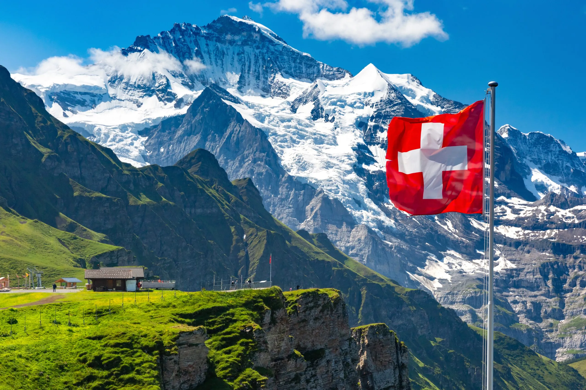

-
Kenya
Explore Kenya's stunning safari landscapes, where the iconic Big Five—lions, elephants, buffaloes, leopards, and rhinos—roam freely. From the vast savannahs of Maasai Mara to the dense forests of Aberdare, every moment offers thrilling wildlife encounters in Kenya's diverse ecosystems.
-

Nigeria
Nigeria's diverse landscape mirrors its people's rich tapestry. With over 250 ethnic groups, each brings unique traditions to this vibrant nation, from bustling Lagos to ancient Kano and Benin City.
-

Norway
Norway's allure lies in its captivating blend of breathtaking landscapes and rich cultural heritage. From the rugged fjords to the snow-capped mountains, the country's natural beauty is unparalleled. Among its most mesmerizing phenomena is the Aurora Borealis, or Northern Lights, painting the sky with vibrant hues. This celestial display has long inspired Norwegian folklore and continues to enchant visitors. Norway's culture is deeply rooted in its Viking heritage, evident in its art, music, and traditions. Whether exploring historic cities like Oslo or immersing oneself in the tranquility of its wilderness, Norway offers a profound journey through nature and culture.
-

Switzerland
Switzerland, famed for its chocolate and precision watches, is a picturesque wonderland of culture and natural beauty. Its alpine landscapes captivate, while its cities blend tradition with modernity. Enjoy the indulgence of Swiss chocolate, marvel at precision watchmaking, and immerse yourself in the charm of Swiss culture amid breathtaking scenery.
-
South Africa
South Africa boasts diverse landscapes, from savannahs to stunning coastlines, offering a rich tapestry for exploration. Its vibrant culture reflects a blend of indigenous traditions and modern influences, seen in its art, music, and cuisine.
-
Japan
Japan's landscape is a harmonious blend of natural wonders and urban innovation. From serene cherry blossom gardens to towering Mount Fuji, the scenery is breathtaking. Its rich culture, steeped in traditions like tea ceremonies and kimono attire, coexists with modern technology and bustling city life, creating a unique tapestry of old and new.
-
Rwanda
Rwanda's landscape is a verdant canvas of rolling hills, dense forests, and picturesque lakes, offering a breathtaking backdrop to its rich cultural heritage. Despite its tumultuous history, Rwanda's resilient people have fostered a vibrant culture, celebrated through colorful festivals, traditional dances, and a strong sense of community.
-

Morocco
Morocco offers a diverse landscape with deserts, mountains, and coastal areas, providing a stunning backdrop for its rich cultural heritage. From lively medinas to serene oases, there's much to explore. Influenced by Arab, Berber, and European traditions, its vibrant culture is evident in its markets, architecture, and cuisine, making it a captivating destination for immersive cultural experiences.
-

Italy
Italy offers diverse landscapes, from vineyards to coastlines, setting the stage for its rich culinary and cultural heritage. Its renowned cuisine reflects regional diversity, blending tradition with innovation. From Rome's historic streets to Venice's canals, Italy's culture brims with art, architecture, and centuries-old traditions, inviting immersive experiences.
-
Zambia
Zambia, home to the majestic Victoria Falls, boasts stunning landscapes and a vibrant culture. The awe-inspiring waterfall is a symbol of Zambia's natural beauty, attracting visitors from around the world. Beyond the falls, Zambia's diverse landscape includes vast savannahs and lush national parks, offering incredible wildlife experiences. Its rich cultural heritage is reflected in traditional ceremonies, music, and art, providing a glimpse into the country's history and traditions.